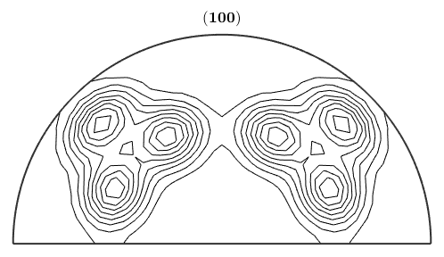

Explains how to globally configure MTEX, i.e. how to set a default Euler angle convention.
The central place of all configuration of the MTEX toolbox is the m-file mtex_settings.m. There the following items can be customized
Many functions provided by MTEX can be customized by options. A option is passed to a method as a string parameter followed by a value. For example, almost all ploting methods support the option RESOLUTION followed by a double value specifying the resolution
odf = SantaFe plotPDF(odf,Miller(1,0,0,odf.CS),'resolution',5*degree,'contour');
odf = ODF
crystal symmetry : m-3m
specimen symmetry: 222
Uniform portion:
weight: 0.73
Radially symmetric portion:
kernel: de la Vallee Poussin, halfwidth 10°
center: (297°,48°,27°)
weight: 0.27
 Options that are not followed by a value are called flags. In the above example contour is a flag that says the plotting routine to plot contour lines. Options and flags to a function are allways optional and can be passed in any order. If conflicting options or flags are passed, i.e., the resolution is specified twice, the later option in the list is considered to be the right one.
| DocHelp 0.1 beta |